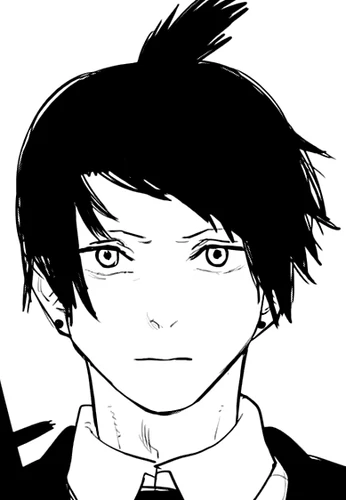

Denji

Aki
Makima

Power
Angel

Himeni
Kishibe
Kobeni
beam
Quanxi
Chainsaw Man (チ ェ ン ソ ー マ ン Chensō Man, lit. "Homem-Serra Elétrica"?)
é um mangá japonês escrito e ilustrado por Tatsuki Fujimoto. Ele foi publicado na Shueisha 's Weekly Shonen Jump revista de dezembro de 2018 até Dezembro de 2020, com seus capítulos coletados em onze volumes. Uma segunda parte foi anunciada e será publicada em série na revista online Shōnen Jump + da Shueisha. Na América do Norte, o mangá é licenciado em inglês pela Viz Media para lançamento impresso e digital, e também é publicado pela Shueisha na Plataforma online Manga Plus.
Foi anunciada uma adaptação da série de anime para televisão produzida pelo MAPPA
Em março de 2021, o mangá tinha mais de 9,3 milhões de cópias em circulação. Em 2021, o mangá ganhou o 66º Prêmio Shogakukan Manga na categoria shōnen.
Chainsaw Man foi bem recebido pela crítica, que destacou sua narrativa, cenas violentas e humor negro.
A história se passa em um mundo onde os demônios nascem dos medos humanos.
Embora sejam geralmente perigosos e malévolos, os humanos podem firmar contratos com demônios para usar uma parte de seu poder.
Denji é um jovem deprimido que está tentando pagar a dívida de seu falecido pai com a yakuza vendendo vários de seus órgãos e trabalhando como caçador de demônios. Denji também possui um demônio parecido com um cachorro chamado Pochita, que se assemelha a uma motosserra e auxilia Denji em seu trabalho.
Denji é incumbido pela Yakuza de matar um demônio, mas descobre uma trama da yakuza para deixar o demônio matá-lo em troca de sua ajuda. Denji é morto e Pochita gravemente ferido, mas os dois já haviam feito um acordo que permite a Pochita se fundir com Denji, revivendo-o como um híbrido humano-demônio com a habilidade de serra elétrica de Pochita.
Denji mata o demônio que o matou e é abordado por uma equipe de caçadores de demônios do governo. Como ele agora se tornou parcialmente um demônio, um dos membros da equipe, Makima, convence Denji a se tornar parte de sua organização para evitar ser caçado por eles
Denji
Aki
Makima
Power
Angel
Himeni
Kishibe
Kobeni
beam
Quanxi
Denji (デ ン ジ?)
Um jovem (autoproclamado ter 16 anos) com cabelos loiros desalinhados. Ele tem olhos castanho-amarelados afiados com bolsas embaixo e dentes afiados combinando. Quando menino, ele herda a dívida de seu pai da yakuza após a morte de seu pai. Depois de conhecer o Devil Pochita, ele se torna um Devil Hunter para a yakuza em uma tentativa de saldar sua dívida. Após a yakuza, que estava sob o controle do Diabo Zumbi, traí-lo, ele morre, e Pochita se torna seu coração, cumprindo um contrato com Denji - ao se tornar seu coração, Denji mostrará a Pochita seus sonhos de uma vida normal. Depois disso, ele pode se transformar no híbrido demônio-humano conhecido como Homem-Serra Elétrica puxando a corda em seu peito. Depois de conhecer Makima, ele se torna um Caçador do Diabo da Segurança Pública para viver como um humano.Sua principal motivação é sua atração por Makima.
Makima (マ キ マ?)
Uma mulher misteriosa que parece ter vinte e poucos anos. Ela é uma Caçadora de Demônios de Segurança Pública, que tomou Denji como seu animal de estimação humano. Makima é astuto, inteligente e manipulador, controlando Denji tirando proveito de sua atração por ela com promessas de um relacionamento romântico e sexual, enquanto o ameaça de extermínio se ele a desobedecer, embora Denji realmente a ame, Makima é apenas cativado pelo Homem-Serra no corpo de Denji, para ser mais preciso, em seu coração. Em grande parte da história, seus objetivos são desconhecidos e sua lealdade à humanidade é um tanto ambígua. Mais tarde, ela é revelada como o Diabo do Controle, que encarna o medo do controle e busca usar o poder do Homem-Serra Elétrica para criar um mundo sem sofrimento.Também é revelado que Makima foi o cérebro por trás dos infortúnios que aconteceram a Denji durante a série. Depois de ser morta por Denji, ela renasceu como uma criança chamada Nayuta (ナ ユ タ) , e colocada aos cuidados de Denji para que ele possa criá-la para ser uma pessoa melhor do que ela era em sua vida passada.
Aki Hayakawa (早川 ア キ Hayakawa Aki?)
Um Caçador de Demônios de Segurança Pública, trabalhando sob o esquadrão especial da Divisão 4 de Makima. Ele tem um contrato com o Curse Devil e o Future Devil, permitindo-lhe usar um poderoso spike em troca de sua vida e ver alguns segundos no futuro. Ele tinha um contrato anterior com o Fox Devil, permitindo-lhe convocar sua cabeça. Aki é geralmente uma pessoa muito estóica, agindo de forma madura e confiável quando está com seus companheiros caçadores de demônios, mas é muito suave quando está sozinho. Apesar de seus confrontos com eles, ele realmente se preocupa com Denji e Power vendo os dois como amigos queridos, e está disposto a se sacrificar por eles. Ele é morto enquanto protegia Makima e estava possuído pelo Gun Devil, tornando-se assim o Gun Fiend, que Denji é forçado a matar. Mais tarde, é revelado que Makima planejava matá-lo como parte de seu plano para quebrar Denji.
Poder (パ ワ ー Pawā?)
Um Blood Fiend e um Public Safety Devil Hunter que faz parte do esquadrão especial de Makima. Power parece uma jovem com cabelos loiros que desce até o meio das costas. Como um demônio, ela tem chifres vermelhos claros projetando-se do topo de sua cabeça. O poder adora a violência e é infantil, ganancioso, quase totalmente automotivado e disposto a prejudicar os outros para sua própria satisfação. Power se preocupa profundamente com seu gato, Meowy, em um ponto disposto a sacrificar a vida de Denji para salvá-lo do Bat Devil. Ela se preocupa profundamente com Denji e Aki, seus primeiros amigos verdadeiros. Mais tarde, ela é morta por Makima na frente de Denji, como parte de seu plano para acabar com Denji, dando-lhe felicidade e, em seguida, tirando-a dele. O poder revive como o Blood Devil do sangue de Denji, mas é mortalmente ferido por Makima novamente. Antes que ela morra,Power faz um contrato com Denji - em troca de seu sangue, ela pede a Denji para encontrar o Blood Devil renascido e transformá-la de volta em Power para que eles possam ser amigos novamente.
Caçadores de demônios de segurança pública
Kishibe (岸 辺?)
O mais forte caçador de demônios da organização. Mais velho do que a maioria dos outros caçadores, ele tem cicatrizes e é cínico. Ele treina Denji e Power, e foi parceiro de Quanxi em sua juventude. Ele planeja se rebelar secretamente contra Makima.
Himeno (姫 野?)
O primeiro parceiro de Aki. Ela usa um tapa-olho e é parceira do Ghost Devil, permitindo que ela use seu braço invisível de qualquer lugar. Ela é morta pelo Snake Devil de Sawatari enquanto tentava derrotar o Homem Katana.
Kobeni Higashiyama (東山 コ ベ ニ Higashiyama Kobeni?)
Uma jovem com um contrato não identificado que era uma Caçadora de Demônios de Segurança Pública que começou como uma nova recruta trabalhando no esquadrão experimental de Makima. Apesar de sua atitude tímida e covarde, ela é habilidosa e talentosa - seus reflexos e furtividade são incomparáveis quando ela está motivada.
Demônios / Demônios da Segurança Pública
Angel Devil (天使 の 悪 魔 Tenshi no Akuma?)
Um demônio humanóide personificando o medo dos anjos. Parecendo um jovem andrógino enigmático, ele não tem nenhuma maldade particular contra os humanos, mas gosta de vê-los sofrer. Ele se associou a Aki após a morte de Himeno e é considerado o segundo mais forte agente de Segurança Pública, mas sua preguiça o impede.
Feixe (ビ ー ム Bīmu?)
O Shark Fiend descontroladamente entusiasmado e instável, que pode "nadar" através de quase tudo e se transformar em uma forma mais monstruosa de tubarão. Ele é parceiro de Denji, a quem ele adora. Mais tarde, ele se sacrifica para reviver Denji durante a batalha com o Demônio das Trevas no Inferno.
Caçadores do Diabo do Setor Privado
Quanxi (ク ァ ン シ Kuanshi?)
Um caçador de demônios chinês e um dos assassinos enviados para levar o coração de Denji. Ela é lésbica e está em um relacionamento poliamoroso com quatro Demônios femininos. Ela é uma híbrida com um demônio sem nome que lhe dá o poder de bestas. Segundo o Papai Noel, ela é a "primeira caçadora de demônios". Ela é decapitada por Makima, mas depois revivida por ela junto com Reze e Katana Man para lutar contra o Homem-Serra, transformado no Diabo Besta.
Papai Noel (サ ン タ ク ロ ー ス Santa Kurōsu?)
Um dos assassinos enviados atrás de Denji. Apresentado como um idoso alemão contraído com o Demônio do Inferno, é revelado mais tarde que o Papai Noel é várias pessoas, o corpo real sendo uma mulher russa referida como "mestre" por seu aluno Tolka, para quem ela também se transforma em um corpo sua. A mestre tem um contrato com a Doll Devil, e ela tem a habilidade de transformar as pessoas em bonecas sob seu controle, que passam a fazer parte da colmeia do Papai Noel. Ela encena um plano para enviar Denji e vários caçadores para o Inferno como sacrifícios ao Demônio das Trevas em troca de poder para matar Makima. Ela ganha esse poder, mas é derrotada por um Denji em chamas.
Demônios e híbridos
Pochita (ポ チ タ?)
O Diabo da Serra Elétrica que se fundiu com Denji e era originalmente o próprio Homem da Serra Elétrica antes de conhecer Denji. Ele tem a capacidade de comer um demônio e apagar sua existência, tornando-o "o demônio que os demônios mais temem". Ele aparece pela primeira vez em sua forma de cachorro, na verdade seu estado enfraquecido depois de uma luta com os quatro cavaleiros e demônios das armas. Sua verdadeira forma demoníaca é uma versão grande e mais escura da forma híbrida de Denji com quatro braços.
Katana Man / Samurai Sword (サ ム ラ イ ソ ー ド Samurai Sōdo?)
O neto do chefe yakuza que mandou matar Denji e Pochita e um agente do Gun Devil. Como Denji, ele é um híbrido humano-demônio com o coração de Katana Devil, capaz de se transformar em sua forma híbrida removendo sua mão, fazendo com que uma katana surja do toco. Seu nome verdadeiro é desconhecido.
Reze (レ ゼ?)
Uma garota apaixonada por Denji que trabalha em um café. Mais tarde, ela é revelada como uma híbrida com o Bomb Devil, capaz de se transformar puxando um pino de granada em seu pescoço, que ela esconde com uma gargantilha, e um espião soviético enviado para matar Denji. Em seu caminho para aparentemente se reconciliar com Denji após sua luta e sua fuga, ela é assassinada pelo Angel Devil sob o controle de Makima.
Gun Devil (銃 の 悪 魔 Jū no Akuma?)
Um dos demônios mais poderosos e temidos que existem. Treze anos antes de a história começar, um tiroteio em massa e um ataque terrorista ocorreram na América, fazendo com que o Gun Devil nascesse do medo de armas. Ele atacou o mundo, matando 1,2 milhão de pessoas em menos de cinco minutos antes de desaparecer. Mais tarde, é revelado que os governos de vários países firmaram contratos com o Gun Devil, e o presidente dos Estados Unidos o convoca para matar Makima. Makima o derrota, mas ele mata Aki e o possui, transformando-o no Gun Fiend. Mais tarde, ele morre nas mãos de Denji.
Darkness Devil (闇 の 悪 魔 Yami no Akuma?)
Um demônio incomensuravelmente poderoso representando o medo primordial da escuridão, residindo no Inferno.